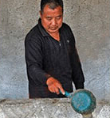
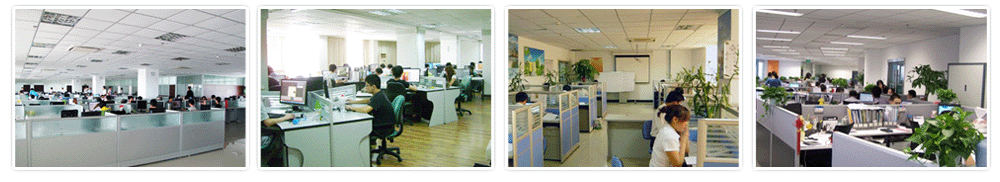
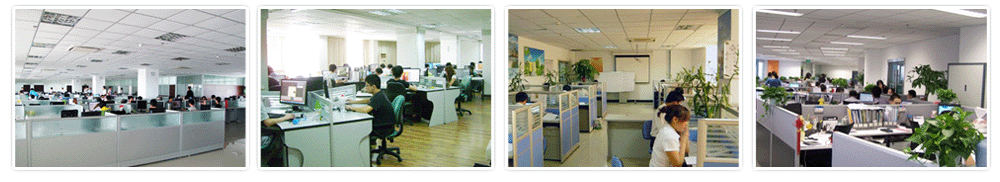

|
|
① |
|
正版视频+配套实体书籍 |
② |
|
激光防伪（保障正版） |
|
|
③ |
|
名师讲解，立省90%费用 |
④ |
|
享受永久免费技术跟踪指导，教材免费自动更新 |
|
| |
⑤ |
|
全国包邮，货到付款 |
⑥ |
|
观看方便，手机、电脑、液晶电视都可以直接播放 |
《养猪技术大全》本站正版销售，现在购买本教程的用户,均可免费获赠VIP会员卡，享受永久免费更新教程及技术跟踪指导服务！
本站唯一销售电话：18979773281
| 教程包含:
场地建设+品种介绍+猪舍建造+饲养技术+饲料配方+猪病防治等包含养猪所需全部技术。（饲料配方和疾病防治是重点） |
| ★ 产品来历： |
| 产品来历：本教程由农业部下属单位中央农业广播电视学校，农业教育出版社制作和出版。几十集技术视频，加上配套书籍，正版产品，价值在600元以上，市面上是买不到这么全的。我们产品成本高，运营成本，您可以算一笔账，398元真不贵！你确实需要这套技术，我们也想为农业发展做点贡献。一分钱一分货，钱是小事，买了盗版和虚假产品，浪费时间，打击信心划不来啊！ |
| ★ 同类产品： |
| 网站可以模仿，产品模仿不了。网上有些同类产品，不是盗版就是粗制滥造，有的是从网上搜集的免费视频，电子书乱七八糟装在一起，有的是私自翻刻正版，视频必然模糊不清，属违法行为；有的是照着书念一遍，做成视频，滥竽充数。有的内容极少，错误百出。因为购买版权是按内容数量收费，他们没这个实力，像我们这样保质保量，就会亏本，所以只能冒险做盗版，私自添加一堆无效教程充数。 |
| ★ 正版验证： |
| 我们的教程具有激光防伪标志，可以通过官方二维码进行验证。教材也有出版社电话，大家可以查证是否为出版社官方号码！收到我们产品可以联系出版社验证正版。收到盗版伪劣产品，可以找卖家退款，同时打电话向出版社和公安机关举报，这是严重的刑事犯罪。虚假产品不敢说这话，这样就是自寻死路！我们的技术教程内容内容全，质量高，对得起大家，值这个价！ |
| ★ 如何防骗： |
| 可以同时购买我们产品和别的产品，货到付款，开箱验货，哪个好收哪个。如果你购买了别的产品，很可能觉得不好而重新购买（根据多年经验，这种情况很多），所以请您务必收藏我们网站，记住订购热线，欢迎随时前来购买。盗版和粗制滥造者，不敢这样写，他们这样做就无利可图了。我们产品质量好，就是有底气，就是这么任性。 |
| ★ 产品说明： |
| 本产品是一套视频教程+配套实体书籍，主要内容都在视频存储设备上，书是配套的。视频是在基地现场拍摄，专家边操作边讲解，通俗易懂，简单易学。 |
养猪能致富吗？养猪的市场和前景到底怎么样？
养猪是一项长盛不衰的产业
--------投资养猪是一种实业，只要你懂技术，再加上勤劳奋斗，人人都可以致富。--------
养猪市场前景广阔，长盛不衰，养猪绝对能致富！
| 国家政策支持 |
饲料价格下降 |
猪肉价格分析 |
市场需求走高 |
| 2018年中央财政安排专项资金65亿元，专项用于发展生猪生产，包括猪舍改造、良种引进、粪污处理，生猪养殖大户购买生猪和饲料等的贷款贴息和保险保费补助支出，生流通和加工方面的贷款贴息支出，生猪防疫服务费用支出等。 |
受国际两大大豆产地产量双双创历史新高的影响，国际大豆价格大幅下降，国内大豆价格也大幅降低，同时我国玉米产量创新高，市场价格持续走低，大豆和玉米今年必然降价，所以国内饲料价格必然会下降。 |
近来，全国生猪价格连续小幅度上涨。但由于饲料价格走低，部分养殖企业养殖成本下降。当前，在出栏减少、冻肉储备减少影响下，我国大部分地区猪肉价格都得以回升，局部地区猪肉价格涨幅领跑CPI。 |
猪肉是我国最重要的肉畜产品之一，市场对猪肉的需求量很大，据中国肉类协会调查显示，2018年全国肉类需求量同比2017年上涨15%，其中猪肉需求量上涨28%以上，长期以来我国猪肉市场还是需求大于供应局面。 |
| 权威报告预测 |
官方销售电话：18979773281（全国免费电话） |
随着餐饮行业的进步和肉食消费结构的不断优化，对猪肉的需求量必将增加。猪肉的人均占有量将会逐步有所提高。——选自《2013—2018年中国猪肉市场分析预测与投资方向研究报告》。
|
|
|
|
|
为什么有人养猪可以快速致富？
----------------你养猪却一年比一年效益差？----------------
| 首先让我们分析一下养猪失败的原因： |
1、养猪品种没选好
品种是提高养猪经济效益的首要条件，品种的好坏直接决定了猪的生产性能、饲料消耗量、饲养周期和料肉比等。众多试验表明，饲养优良的杂种猪，可使母猪每窝断乳仔猪增加1～2头，增重提高10%～30%，饲料利用率提高10%～15%以上。 |
2、饲料搭配不合理
饲料是养殖生猪的基础，是养猪成败的关键因素。通常饲料费用占养猪成本的70%～80%，所以怎样合理地选择，利用，开发饲料，提高饲料报酬率，降低耗料率，对提高养猪经济效益起到决定性的作用。
|
3、猪病防治不到位
养猪业者总是把注意力盯在猪价上，认为猪价是猪场能否收入的决定因素，其实不对。如果具体到一个存栏500头母猪、月均出栏800头商品猪的猪场，冬季的一个流行性腹泻，造成的直接损失就是40万元；而猪肉价格如果每千克降1元月均损失8万元，仅相当于流行性腹泻造成损失的五分之一。
|
4、猪场管理不科学
饲养管理好的猪场，可以节约饲料，避免饲料浪费，使投入的饲料大限度转化为猪的增重；饲养管理好的猪场，猪病发生的少，既可以节省疫苗购置费用，又可以节约预防用药费用和治疗用药费用等。 |
很多时候我们做事情之所以感觉难，就是因为没有掌握正确的方法，方法对了，就能达到事半功倍的效果，结果就一定很好！
我们相信
有了《养猪技术大全》
----------------养猪快速致富你，也可以！----------------
各位养殖兄弟姐妹往这看了：
如何减少养猪风险，快速增加稳定收入呢？请看下面的答案......
| 任何的成功一定有方法，失败也总有原因， 养猪失败的原因,归根结底还在饲养技术管理上，没有掌握养猪的关键技术就匆匆做起来了，殊不知，养殖这行业“要想富，先技术”! |
| 养殖业本来就是技术性比较强的行业，掌握了养猪技术再去创业，不但可以减少风险，而且可以让你实现快速致富的夙愿！ |
|
| 为了帮助正在准备进行养猪、放弃现有养殖产品准备养猪、养猪专业户实现致富梦。我公司特与农业部养殖科学技术研究中心合作制作了一整套国内最先进的科学养猪专业指导教程《养猪技术大全》这套养殖技术教程是养猪专业户必备的致富技术教程。对您养殖生猪有很大的帮助及参考价值，绝对让您一次学习，受益终身。 |
|
这套养猪系列视频教程为大型养殖场现场实景拍摄，系统讲解，实用养猪核心技术，易学实用。是低成本、高产出、科学养猪的专业指导教程。也是一整套养猪致富的专业教材。帮你在养猪致富路上快速、有效、低风险的稳定增收！
学完这套教程，你可以做到：
不再小农户式的养殖，而是规模养殖，这套饲养技术可以大大减少你的风险，利用饲养规模来倍增你的利润，树立品牌，让你科学的养出规模，养出效益。
掌握养猪的关键环节，养猪的场地如何选择？养猪种猪如何选购？养猪场如何管理？养猪疾病如何防御等。
让你科学的养殖，把传统的养殖方式跟现代的饲养管理技术结合起来，快速养出效益。
科学的制定出养猪的饲养批次和出栏时间，保证市场的均衡供应，低风险的养殖致富。
让你知道科学的养殖密度，最大化的管理和利用场地。
怎样加强防疫，坚决杜绝恶性传染病的发生。
学会养猪饲料配比技术。怎样灵活运用饲料标准，合理搭配饲料。以保证满足猪在生长发育过程中对各种营养的需求，让猪长得健康，品质有保障。
学会科学的核算养猪饲养的成本和利润，宏观调控饲养规模，计划投入和产出。
学会鲜活虫饲料的制作，使养出的猪肉质鲜美、生长快、从而节约成本。
学会怎样养猪让您的养殖成本一少再少。
掌握不同地区夏季养猪饲养技术的要点。
学会猪舍如何修建，围栏修建的方法，怎样建猪舍投资少，而使用效果很好。
科学的分配设备 料桶和饮水器，并进行合理的分布，从而提高养猪饲养的均匀度和成活率。
知道养猪如何做出品牌，如何做好养猪产、供、销的环节，形成良性生产循环。
还有很多养猪不为人知的核心技术 ……. |
| 以上所有养殖过程中遇到问题都将在《养猪技术大全》里面一一为您解决 |
《养猪技术大全》不但让您科学的养好猪，而且让你快速的踏上致富路，是您实现养猪创业致富的好帮手！
一经上市
----------------即受到养殖权威专家一致好评！----------------
《养猪技术大全》解决养猪难题，手把手教您快速致富！
 |
中国农科院畜牧兽医研究所院士 《养猪技术大全》主编 王安
这套技术是真正农民需要的三农力作
发酵床养猪技术是养殖户真正需要的技术，这套技术可以使养猪年均节省饲料10%左右，节水90%以上，节省劳力60%以上。清洁环境，猪群健康，提高肉质，同时节省土地，排泄物真正达到零排放。诸多因素使得这套技术十分适合现代化养殖的发展，谁掌握了《养猪技术大全》谁将终身受益。 |
|
 |
中国农业大学动物科技学院院士 博士生导师 李振华
有了这套技术，养起猪来绝对事半功倍
发酵床养猪技术是一种无污染、零排放的有机农业技术，是利用人们周围自然环境里的生物资源。在经过特殊设计的猪舍里，填入上述有机填料，再将仔猪放入猪舍，让猪从小到大都生活在这种有机垫料上面。生态科学养殖的猪，在自然的状态下成长，养起猪来绝对是事半功倍。
|
|
|
动物营养国家重点实验室主任 陈金鹏
值得向全国推广的养殖实用教材
农牧业者可以在目前的基设下生存。业者一定要勇于迈出旧框子，接受新的技术挑战，引用现有同业成功的 例子开发自己的新方向，来迎接未来的新挑战。《养猪技术大全》不仅将生态养殖就带上一个新高度，帮助养猪生产者提高科技水平和经济效益。这种方法，值得面向全国养猪业推广！
|
|
 |
教程效果固然重要，但更重要的是学习结束后，带着养猪新技术的启迪，新的感悟，以前所未有的激情和期待，投入到一段惊心动魄的创业旅程，5个月后，迎接他们的是连自己都难以置信的人生飞跃！
如此震撼的养猪教程，学习者的看法如何呢？他们5个月后的结果怎样呢？下面就让我来介绍你认识几位具有代表性的学习者，由他们亲自向你描述他们的感想和5个月来的变化…… |
|
光想养猪行不通，会技术才是硬道理 山东省鄄城县一一李翔
首先非常感谢这套《养猪技术大全》教程给我带来的幸福生活！以前，我在天津打工，干的是泥瓦活，非常辛苦。我发现猪肉在大城市很有市场潜力，又看到住处附近几家大型养猪场效益不错，心里就开始痒痒了。别人养猪能养殖致富，我一个堂堂的高中生还怕干不好？干脆，别在外“瞎混”了，回家养猪去！
我回家就买来一台电脑，上网寻找信息，订购了一套《养猪技术大全》正版技术，高清视频，通俗易通，学起来很快。我养了两年猪，已经从最初的几十头发展到现在1000多头，每年还要提供给其他养猪户400多头母本猪，现在每年进账20多万元，效益确实不错。现在我们村出去打工的年轻人纷纷跑回来养猪，已经发展了数十多家规模养殖户，成为远近十里八乡闻名的养猪致富村。生态养猪，规模化养猪确实不错，走上了致富的路子，我好高兴，成为别人眼中羡慕的成功养猪专业户！太谢谢你们了。 |
|
|
|
从“养猪大王”到农民致富“领头猪”的蜕变 四川省德阳市中江县 周德生
一位出生在贫困农村，生长于泥土之中，年纪轻轻，貌不出众、语不惊人、憨厚朴实的地地道道的农民，却以他百折不挠、敢闯敢拼的精神以及自身的聪明才智成为了三合垸的“养猪大王”。穷困不是头，2008年，猪肉行情大涨，周德生决心拼一把，贷款两万余元承包了一个百余亩的小山头，承包期为50年。又砸锅卖铁，四处东挪西借，筹齐3万元建起了猪舍和房屋。两个月后，他正式投放了第一批100头小猪仔。但是天有不测风云。由于没有养猪经验，对各种疫情没有太多了解，一场突如其来的猪瘟（猪蓝耳病）席卷了他的养猪场，猪死去了将近九成，当年亏损达到5万余元。这样的打击对刚刚起步创业的周德生来说，好似晴天霹雳，不仅是倾家荡产，而且还是负债累累。面对重挫，是就此一蹶不振，沉没，消亡，还是挺起胸膛，重整旗鼓，重振事业。不甘心失败的周德生经过深入思考，毅然决绝地选择了后者。周德生吃了没有技术的亏，痛定思痛，托人订购了一套新版《养猪技术大全》视频教程，日夜钻研，总结经验，卖房子卖地接着干，对养殖模式进行了改良，从散养发展为很先进为生态养猪法……养猪场也没有发生大规模的疫情，当年出栏肥猪达到300余头。第二年的收入不仅弥补了第一年的亏损，而且还收入3万余元。猪价一路高歌猛进。第三年出栏的肥猪达到500头，收入10万元以上，真正成了八新镇的“养猪大王”。 |
|
|
|
张敏芳一一巾帼不让须眉的养猪传奇 山东烟台——张敏芳
我去年养了50头猪，可天天起早贪黑，收入还是微乎其微，所以就买了很多养猪技术的书籍和资料，天天晚上研究，也没什么效果，有一次，我的孩子在网上看到了《养猪技术大全》据说客户的评价都非常好。我也没多想，就买了一份，但这次收到的不是普通的书籍和资料了，全部是通俗易懂的养殖视频教程，讲解的全是新技术，而且简单易学。
我怀着激动的心情，扩建了我家的猪舍，用起这种新技术，一年下来，已经扩展到了300头猪，出栏早，又省料。这份《养猪技术大全》已经带动了我们村很多养猪户致富了。 |
|
|
|
弃置小厂养肉猪 牺牲“钱途”换前途 福建光泽县崇仁乡--李鹏举
算起来我喂猪已经十余年了，但前几年就是等于瞎忙，几乎没有产出，就想放弃不再喂猪了。看别人打工一年比我喂猪要强的多，一栋栋楼房悄然建起，而我却不见什么起色，朋友们都劝我改行。为此我和老婆经常斗嘴。“嫁给你这么多年，没少操心受累，没见啥成就，不行就离婚。”我已经开始厌恶养猪了。喂猪确实没有给我带来什么富裕，还给我带来了不少麻烦。就在我犹豫不决时，在网上浏览购买了《养猪技术大全》……从教学录像里我见识了听都没听过的养猪新模式，并且规范了自己以前养猪的坏习惯，一晃两年过去了，这两年我按照《养猪技术大全》建立了养猪联合体，集中采购，统一销售。生活也在乡里算的上很富裕了，现在老婆干起来很带劲，不但不和我斗嘴了，而我也不时和她开玩笑说，看咱家差不多都换了，啥时候你也该换了。而她却笑着说这几年多亏那养猪的教材，要不我们真不知道现在过得咋样。 |
 |
|
|
不甘“死工资” 创业走出来的致富带头人 黑龙江哈尔滨--张晓涛
我以前在我们当地棉花储备库做仓库管理员，收入一直很少，那个时候，农村出身的我日子过得很清贫。后来， 我总想着做一点自己的事。因为一个偶然的机遇，我踏进养猪行业，只用了短短两年时间就打了翻身仗。
这多亏了《养猪技术大全》，这两年我按照《养猪技术大全》里面讲解的方法养猪，这套好技术，使我的养猪的利润十分可观，仅仅两年的时间，债务还清了，每年还能净收30来万。经过科学的养殖方法，第二年的饲料成本是降低了20%以上，肉猪出栏量更是翻了两番。更让我高兴的是，原本反对我的家人，现在也主动到养殖场，当起了饲养员。如今我已经渐渐的扩大了规模，并且通过养殖技术帮助了大量想要创业的年轻人。 |
|
|
| 很显然，现场视频教学内容，不可能在这个网页里作最全面的介绍，所以，我们在此仅仅展示教程视频存储设备中一些典型的技术片段。相信通过这些片断，你就能对整个养猪技术有一个轮廓性的认识…… |
《养猪技术大全》教您如何快速致富，快速成功！
| 如何饲养好母猪 |
科学养猪法——冬季养猪 |
| 种公猪的饲养技术仔猪的科学饲养 |
瘦肉型猪的繁殖与饲养 |
| 低成本高效益养猪法 |
特种野猪养殖技术 |
| 科学养猪综合配套技术 |
猪病的针灸治疗 |
| 怎样办好一个养猪场 |
饲料配制与加工处理技术 |
| 育肥猪的饲养管理夏季育肥猪的饲养管冬季仔猪的饲养 |
科学养猪法——养猪场污染治理与废弃物利用 |
| 养猪场疾病控制技术 |
国外正版猪人工授精技术视频存储设备 |
| 养猪场的综合卫生防疫措施 |
高致病性猪蓝耳病了防控 |
| 生态养猪场建造技术 |
猪病防治——养猪人必备 |
| 科学养猪法——无公害猪养殖 |
发酵床养猪养殖技术 |
| 兽医常用诊断技术系列 |
猪呼吸道疾病的防治 |
| 猪病防治技术 |
仔猪腹泻性疾病的防治技术 |
| 猪链球菌病的防治 |
母猪繁殖障碍性疾病综合防治技术 |
| 猪病的针灸治疗 |
规模化猪场疫病综合防治技术 |
| 高致病性猪蓝耳病的防治 |
养猪场的综合性卫生防疫措施 |
| 冬季妊娠母猪饲养管理 |
生猪饲料的配制技术 |
| 冬季育肥猪饲养管理 |
生猪优良品种介绍 |
| 鲁农一号猪配套系 |
夏季仔猪的饲养管理 |
| 现代养猪技术 |
种公猪夏季的饲养管理 |
|
| 这套教程从养猪品种的选择，场地的选择，不同时期的饲养管理、养猪场的防疫消毒方法和程序、常见猪病的发现和管理，猪饲料的配置以及简易节能猪场的建设等等，全面讲解了养猪的技术管理要点，是您养猪致富的宝贵教程。 |
| 但是，99％的人对养殖致富有两大不可饶恕的误区，他们想快速致富却又不愿意投资最有效方法，花费较多的时间在痛苦中摸索，本来想省钱，结果不但没有省到钱，反而浪费了大量的时间；也有的认为养殖致富必须得有资本，因此他们等待，他们再等待，直到今天，依然贫穷！毫无疑问，资本能够帮助你成功，但它绝对不是最重要的元素，更不是你不可或缺的元素。你最重要的不可或缺的元素不是别的，而是……想法和技能，有创意的想法和成功实践的技能！ |
| OK,相信这些片断让你对这套教程，有了更深刻的认识。我有两个问题要问你…… |
“你也渴望拥有这套教程吗？
如果你呆在家里就能快速的掌握养猪的核心技术，
你愿意付出什么样的价格？”
| 甭提价格，让我先来告诉你，如果你决定购买这套教程，你将得到什么。具体来说，你将得到： |
|
第一部分：《养猪技术大全》最新高清版
《养猪技术大全》由养殖基地现场实地拍摄，专家真人边示范边讲解，高标准的剪辑，高品质的制作，高保真还原现场教学的声音、图像和方法，让你最大限度地，坐在家里享受身临其境的效果。全部都是标准普通话系统讲解，易学易用，是你致富路上的好帮手！
▲特别说明：本教程原来有30张学习光盘，经客户反馈，学习过程中手动更换光盘播放比较麻烦，一不小心划伤光盘，观看效果就不好或者无法读取观看了，并且现在很多电脑也没有光驱了，影碟机很多人也不用了，所以我们就做成最新的U盘和移动硬盘版，直接插到手机或电脑接口上即可自动播放。 |
第二部分：《高效养猪技术》+《猪病防治实用手册》（实体书籍）
|
|
配套的这些实体书籍，你既可以随时随地浏览、学习本教程的精华，同时不受视频教程播放的限制，又可以和视频教程同时使用，相互补充，相互强化，提高学习效率。
书籍内容编写突出科学性、实用性和通俗性，开本、装帧、定价强调适合农村特点，做到让农民买得起，看得懂，用得上。希望配套书籍能够成为一套社会主义新农村建设的指导用书，成为一套指导农民增产增收、脱贫致富、提高自身文化素质、更新观念的学习资料，成为农民的良师益友。
书籍本着实际、实用的原则，切实帮助广大农民提升科学养殖技术水平，科学引导农民朋友脱贫致富，让农民朋友们轻轻松松地奔向致富之路。
|
| 部分目录展示：(由于篇幅有限，只展示部分目录) |
第一章 猪的品种及生物学特性
第一节 猪的品种概述
一、品种综述
二、品种资源的保护
三、品种资源的综合利用
四、品种与养殖效益分析
第二节 猪的优良品种
一、主要优良地方品种
二、主要培育品种
三、主要优良引进品种
第三节 猪的生物学特性
一、生理特点
二、生理习性
三、生理特点和生理习性对环境的要求
第二章 养猪场建造与环境控制
第一节 场址与建筑规划
第二节 猪舍建筑设计
第三节 养猪场的设施设备
第四节 养猪场环境的控制
第三章 规模化养猪场的生产工艺与流程
第一节 规模化养猪生产的特点
第二节 规模化养猪场的生产工艺流程
第三节 规模化养猪场废弃物的处理
第四章 猪的品种
第一节 我国的地方猪种
第二节 我国培育的猪种
|
第三节 引进的国外猪种
第四节 规模化养猪场杂交繁育体系的建立
第五章 猪的繁殖技术
第一节 猪的配种
第二节 猪的人工授精技术
第三节 有关的生物技术
第六章 猪的营养和饲料
第一节 猪的饲养标准
第二节 饲料与饲料添加剂
第三节 猪饲料的配合
第七章 猪的饲养管理
第一节 哺乳仔猪的饲养管理
第二节 断奶仔猪的饲养管理
第三节 生长育肥猪的饲养管理
第四节 种公猪的饲养管理
第五节 种母猪的饲养管理
第六节 后备猪的饲养管理
第八章 规模化养猪场的卫生防疫
第一节 卫生消毒
第二节 猪传染病防制原则及主要措施
第三节 制定和执行科学合理的免疫程序
第四节 猪寄生虫病的综合防制措施
第五节 集约化养猪场寄生虫控制程序
第六节 药物预防
第七节 疫病的监测
第八节 疫病的控制和扑灭 |
第九节 不同阶段猪病的特点和预防措施
第十节 一、二、三类动物疫病病种名录
第九章 常见猪病的诊断与防治
第一节 细菌性传染病
第二节 病毒性传染病
第三节 寄生虫病
第四节 中毒病
第五节 营养代谢病
第六节 普通病
第十章 猪肉制品的加工与品质控制
第一节 生猪屠宰场的建立及其卫生要求
第二节 生猪的运输
第三节 生猪的宰前检验与管理
第四节 生猪屠宰的操作规程和卫生要求
第五节 生猪宰后的检验
第六节 猪肉的冷却与分割加工
第七节 猪肉的运输与储藏
第八节 无公害猪肉的技术标准
第九节 猪肉制品加工
第十节 肉品加工中的危害分析与关键控制点(HACCP)
第十一章 规模化养猪场的经营管理
第一节 养猪场生产管理
第二节 养猪场经济效益分析
第三节 计算机在养猪场管理中的应用 |
|
《养猪技术大全》适合哪些人?
本套教程适用于所有的养猪场技术管理人员、养猪的个体户，还有基层的畜牧工作者，以及想投资养猪的人员。
其实你我都知道，世界上没有任何产品适合任何人，也许这个被无数成功者验证过的教程也不一定适合你，它的价值仅仅属于慧眼识货的人，属于渴望成功并坚持学完全部资料，积极实践的人，因为他们知道成功的分量有多重。因此，如果你愿意持续贫穷；如果你愿意持续迷茫；如果你愿意持续被竞争对手不断超越，那么这部产品不适合对成功没有渴望的人。 |
一站式讲解
详细的养猪教学流程
----------------从0学起也不愁----------------
即使对养猪技术知之甚少也可以轻松上手
| 本套养猪技术教程为您详细从选种到出栏一站式讲解，内容包括养猪的方方面面，自成一套学习系统，即使对养猪技术知之甚少也可以轻松上手，免除您买完以后不知道从哪学习的后顾之忧。 |
|
|
到底好不好？
一比就知道
----------------那就让我们看一下----------------
《养猪技术大全》与其他养殖技术的比较结果
|
养殖类丛书 |
专家培训讲座 |
普通养殖视频
|
《养猪技术大全》
|
| 权威 |
多为大学教授主编，但内容原创性无法考究。 |
专家虽是经验丰富，但受到具体实际操作的限制。 |
找专家代言，内容抄袭，有可能是劣质盗版。
|
农业频道推出的系列教程之一。由农业部科教中心和中央农业广电学校联合制作。 |
| 内容 |
内容枯燥乏味，专业术语多很难读懂理解，很难从中得到有用的信息。
|
内容广泛，专业性强，但缺乏深度，问题针对性不强。 |
不是过于繁杂就是太简单，找不到自己需要的内容。
|
从猪场选址、选种到出栏，一站式讲解，免去养殖户的一切后顾之忧。 |
| 效果 |
看不懂，理解不了，就根本没有办法进行实际操作，自然不会有太大效果。
|
当时觉得很有道理，但没有具体问题具体分析，效果不理想。 |
读稿式的讲解，内容不细化听完以后还是一头雾水。
|
内容通俗易懂，画面清晰，全部用最直接、最普通的语言为用户讲解，即使毫无养殖经验也可以轻松上手。 |
| 服务 |
卖出去就完事，完全就是一锤子买卖，不管不问。 |
无 |
后期没有技术服务。遇到难题，养殖户还是没有办法解决。 |
拥有强大的售后技术服务团队，技术交流，疑难问题专家解答。
|
|
无法比拟的优势
《养猪技术大全》
----------------有其他产品无法比拟的6大优势----------------
我们倡导的
不是一锤子买卖
我们本着
认真负责，帮助广大养猪户走上
致富之路的态度
让您安心进行养猪事业，
解除后顾之忧！
近日不少个人商家仿制甚至盗用我网站内容制作成盗版劣质产品在各大搜索引擎上销售，为了避免上当受骗，各位消费者朋友在购买时请认真识别真伪。官方网站正版产品《养猪技术大全》产品具有防伪标志。
全国统一订购热线为：18979773281
在此本公司做出五点声明：
1、最新农业致富宝典系列《养猪技术大全》只有本公司独家生产及销售，从未授权给其他公司和人员进行生产。
2、任何公司和个人生产和销售假冒《养猪技术大全》产品均属违法行为，本公司将对其侵权行为进行调查，并进一步追究其法律责任。
3、欢迎广大用户对不法行为监督举报。对于提供线索并能协助查获模具的相关人员，本公司将给予奖励。
4、因购买盗版《养猪技术大全》造成养殖户经济损失，本公司概不负责。
5、本公司拥有最终解释权。 |
|
特别强调
这不是一般的技术学习资料
--------它已经让千万人走进了成功的殿堂--------
也可能改变你的命运
在中国，千万养猪户正在疯狂地购买这套产品
你可以选择不屑一顾，也可以选择积极行动
只要你努力去实践
这套产品将助你走上致富的快车道
如果这套产品能从此改变你的命运
你愿意尝试吗？
只要你掌握了这套养猪技术
就能以比普通人快50倍的速度去实现你的梦想！
|
| ★ |
1：这个教程分地区吗？我们这里的养猪适合吗？ |
|
答：这套教程包括并适合全国各地养猪品种的饲养管理，大多的饲养管理环节是一样的，但对不同养殖技术管理的养猪品种，又分出来单独的进行讲解，几乎涵盖了全国各地养猪品种的饲养管理，是学习养猪技术的全套百科教程，助你快速走上养猪致富路！ |
| ★ |
2：视频教程质量有保障吗？ |
|
答：我们采用顶级大容量视频存储压缩技术制作，所有视频存储设备均经软件和人工严格测试合格、方予发出。如有极个别顾客由于机器的兼容性问题，无法读盘，我方付快递费，重新快递教程。 |
| ★ |
3：高清视频清晰吗？ |
|
答：视频教程都是高清画质，和我们平常看的高清电影一样，声音准确、图像清晰。所以，清晰度您完全不用担心。 |
| ★ |
4：如果产品达不到我的满意怎么办？ |
|
答：网站介绍的和邮递给您的产品是一样的，有一点不一样您都完全可以拒收或者退货的，我们也会立刻无条件全额退还您的货款！但是这种现象从来没有发生过，因为教程的内容都是货真价实的，几乎涵盖了所有的养猪秘诀。您放心好了！！
另外，您拿到货后还有30天的时间验证教程的价值，如果30天后您确认教程不能让您的养猪技能有所提高，您只需把产品退给我们，我们会一分不少的退款给您！毕竟有用的产品应该留给有需要的人。 |
| ★ |
5：可以先验货再付款吗？ |
|
答：当然可以，我们产品的质量是绝对保证的，而且还有服务的，在产品里面有服务电话的，有任何需要帮助的都是可以打电话的，放心吧，我们对客户都是认真负责的
我们卖的不仅是教程，还有服务，更是交朋友。
收到货后还有一个月的跟踪服务的，帮助您更好的用好教程，我们全国服务电话18979773281 |
| ★ |
6：教程是纸质的书还是视频？ |
|
答：教程是视频+书籍配合学习的形式。视频部分是现场培训的教程，书籍是配套教材，视频教学+书籍教学相结合效果才是最好的。如果您想快速学习养猪技术，选择我们这套教材会让您事半功倍。 |
| ★ |
7：价格还可以优惠吗？ |
|
答：我理解你的想法，我觉得您关心的不是唯一的价格，而是教程带给您的价值是否远远的超过这个价格，您知道的养猪就是一个技术活，一个新技术的运用，至少会降低饲养风险和提高利润上千元的，如果这套教程让你彻底的养好猪，快速高效的倍增利润，398元对您来说还是超值的，您说呢？
其实，很多客户还说便宜呢，因为单独参加学习要好几千的！
投资298学习，价格连养1头猪的利润都不到，而且技术学会是永远的。 |
| ★ |
8：下订单后多长时间可以到货？ |
|
答：对顺丰快递可以送达的，一般3天左右就可以到货，顺丰快不到的极个别地区，我们会给您安排发其他快递一般3-5天可以送到。 |
|
|
 |
|
 |
|
科技下乡
原价：798元，立刻订购，仅需科技下乡价：398元
--------活动仅限10天！活动结束即刻恢复原价-------
在线订购
 
